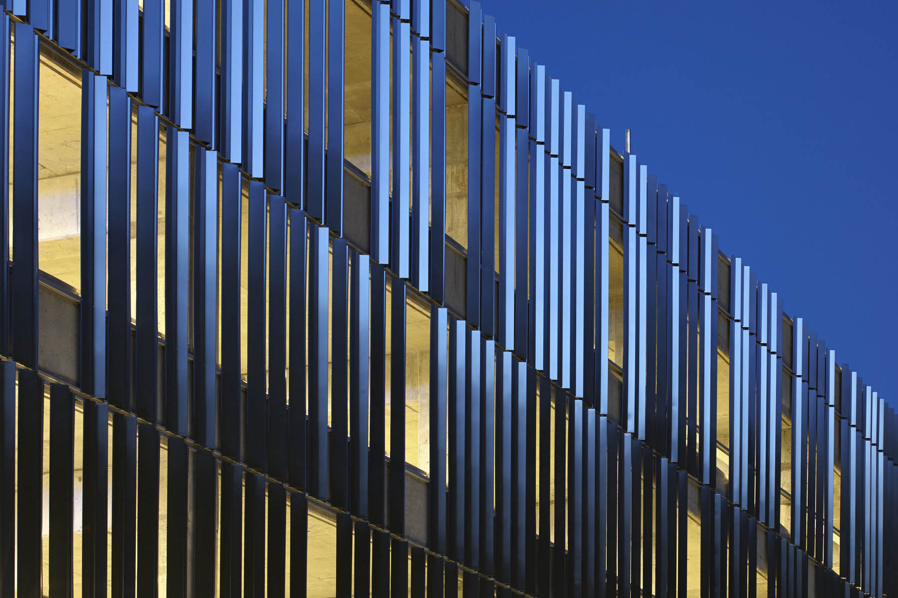

COMPUTATION
Fitts-Woolard Hall

USAFA Cyberworx

Wake Tech Parking Deck
Pedestrian Bridge

UVA Alderman Library Rennovation

Brooks Global Studies
Charlotte New Main Library
Dynamo and Grasshopper Deployment

Project Data Warehouse

Misc Work
Fitts-Woolard Hall
3D Wood Wall
Link to Architecture page
This 220,000 sf project is a new engineering building for NC State University, housing the dean of the college of engineering, the civil engineering department, and the structural engineering department. It includes research labs, teaching labs, classrooms, and offices. I was involved from the programming phase through closeout. During Programming, I developed a database to track and validate programming requirements throughout the design process. In the design phase, computational design was used to calculate daylighting, energy usage, a dynamic window layout on the exterior. Computational tools were also used to create the focal point for the interior of the building, a wood wall and metal stair meant to visually draw people up into the building. The wood wall was made up of a series of 50 unique faceted panels arranged into large repeating triangles, the form inspired by blending the work of both departments. The resulting design was digitally transmitted to the fabricator for production. As the main Architectural representative on the project, during CA the data from the contractor was linked to a floor plan to quickly illustrate where the design team needed to work that day. My scope of work also included me being the LEED accredited professional helping the project get LEED Silver, and the first LEED v4 project for our company.


USAFA Cyberworx
Freeform Stair
Under Construction
A new classroom building in Colorado provides opportunities for the students in the Academy. Cyberworx prioritize the needs of military personnel, think about complex systems, and use new technologies like AI, AR, IoT, and quantum computing to make the Air Force and Department of Defense more effective and efficient. My involvement is isolated to the freeform stair that is located in the entrance atrium. The owner wanted a spiral stair to fit in with the context of other buildings on campus that have similar stairs. However due to the shape of the opening a spiral stair could not fit. Working closely with structural engineer and the glass bending company, a freeform stair was designed that meets all code, fabrication, and structural requirements. Work also included providing digital 3D models to the fabricator for direct fabrication of formwork.

Wake Tech Parking Deck
Stainless steel facade panels
Link to Architecture pageThe Wake Tech campus is split by a natural wetland and forest. The site for the deck is located directly on one edge of the forest. All students commute to campus, requiring ample parking and large parking decks. To break up the monotony of the long edge of the deck, a parametrically generated stainless steel facade was designed. The panels respond to its context by being closely spaced at the street edge and opening up at the wetland edge as they turn the corner. Both sides of the deck are visible to students, one side is visible from the street, and the other from a pedestrian bridge that moves across the wetlands and connects to the main library of the campus. In addition, a computational design for supergraphic floor numbers was generated out of durable ACM panels.


CNC supergraphic numbers
asdf


Pedestrian Bridge
Mirrored Panel Glare Analysis
asdf


UVA Alderman Library Rennovation
Skylight geometry design and optimization
asdf


Brooks Global Studies
Supergraphic
asdf

Charlotte New Main Library
Facade and Stair Rationalizationc
In Design
This project is the new main library in downtown Charlotte where they are replacing the old facility with a new one that focuses on the public and the new role and responsibility that libraries have for their communities. As the Architect of Record working with Snohetta, my involvement began in late Design Development. I am responsible for generating new scripts or making changes to existing scripts generated in previous phases as the design is refined. Work on the exterior includes: updating the curved facade to revise mullion shapes and sizes and geometry and alignments with the floors as well as metal panel facade studies on the remaining 3 sides of the building. It also includes scope on the interior where I am revising the geometry of the atrium stairs and opening with a complete redesign of the guardrails, coordination with structure and ensuring that the stairs are meeting code.

Dynamo and Grasshopper Deployment
asdf


Misc Work
AIA TAP National Advisory Group 2020 Chair
2017-2022. I serve on the leadership group for the AIA Technology in Architectural Practice Knowledge Community (TAP). Responsibilities include charing the 2020 Building Connections Congress confrerence and the 2021 national AIA Innovation awards. Other involvement includes advising the AIA Strategic Council, and serving on various taskforces such as the national AIA COVID-19 task force. TAP serves as a resource for AIA members, the profession, and the public in the deployment of computer technology in the practice of architecture. Technology in Architectural Practice monitors the development of computer technology and its impact on architecture practice and the entire building life cycle, including design, construction, facility management, and retirement or reuse.
Link to the AIA TAP webistePebble Smart-watch App
I like minimal watch faces on my Pebble Smart-watch. The issue with these is they do not show the date and the pebble OS didn't have an easy way to simply show the date. I hacked together some code and created an app for the Pebble Appstore that does just that. It shoes the date when you hit one of the buttons on the side of the watch. Various visual aspects of the app are customizable through your smart phone

Who We Are: Javascript image
I created a Script that took employee data from our employee database and images from our image database and created a graphic of the faces of our entire firm. At the time of it's creation, our multi-office firm was attempting to feel more cohesive and people also found it fun to try to find themselves in the image. The script allows for a strong amount of customization such as the order of images and color borders representing office location or discipline.

Intranet Restructuring
I was involved with a small team to improve our company's Intranet. The previous Intranet was confusing, unregulated and all the information was outdated. Our group took the existing Intranet and pared it down immensely. It became easier to find what was needed as well as an easier place to share knowledge. The result is more engagement across the firm, the information in the libraries is more relevant, staff know where find information, as well as who to contact if things are outdated or missing. Our group is still involved in encouraging people to post and contribute to the Intranet. As a result, the amount of posts, content, and most importantly, the quality have all increased. Our firm was asked to present our redesign to at a conference put on by Knowledge Architecture.


LEED Complexity Diagram
I set out to create a interactive diagram that showed the complexity and relationship of the LEED v4 points. I used a data visualization tool and then packaged it up for the web so that it could be shared.
Check out the interactive graphic
Clark Nexsen Holiday Graphic
Marketing approached me to create the Clark Nexsen holiday graphic to send to clients and use on social media.
Here is a Link to an article where we discuss the process of making the animation.

CANstruction
I created a Grasshopper script to rapidly visualize and iterate the design for the CANStruction fund raising event. We partnered with RedHat, a tech company, so I wanted to implement as much technology as possible. The script allowed for the form and can heights to be input and it would then generate a visualization of the final result including can count. After the design was completed and sent to the CNC fabricator, the quote was too high because it was slightly wider than the material provided. A quick reduction in the size of the underlying form generated a new output that used 21 less sheets and saved over $1,000 in labor. Without parametric scripting the entire drawings would have had to be redone.
Here is a Link to an article I wrote for Clark Nexsen's website.